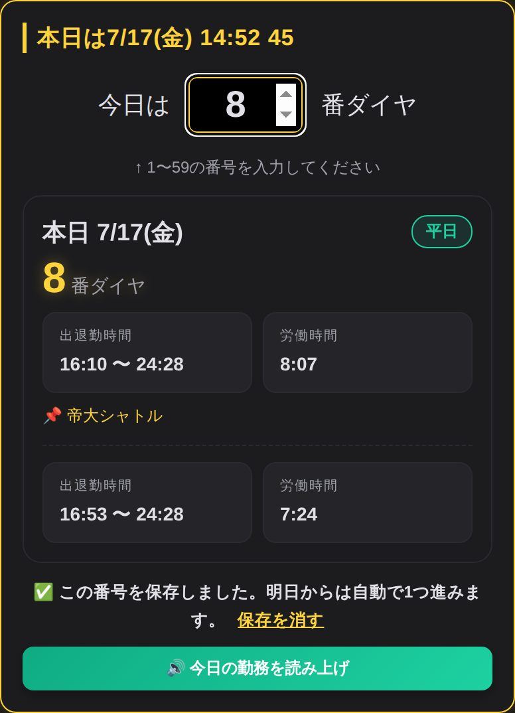
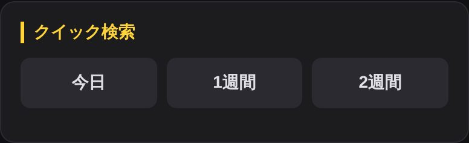
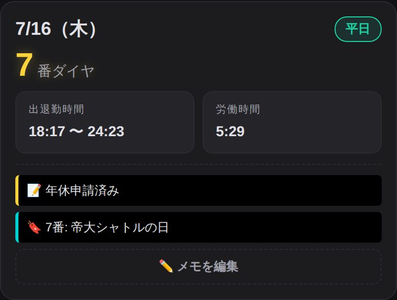
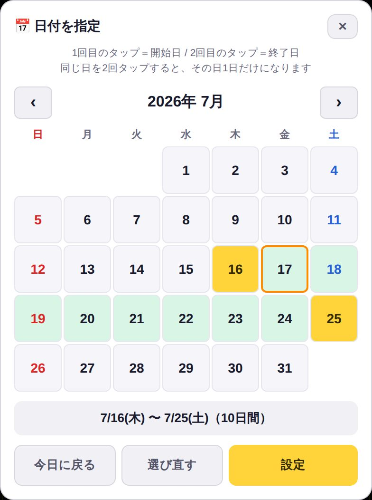
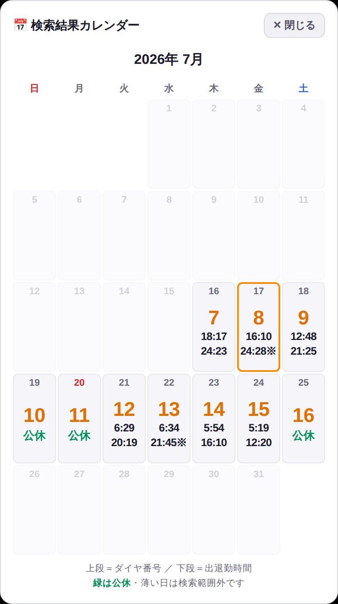
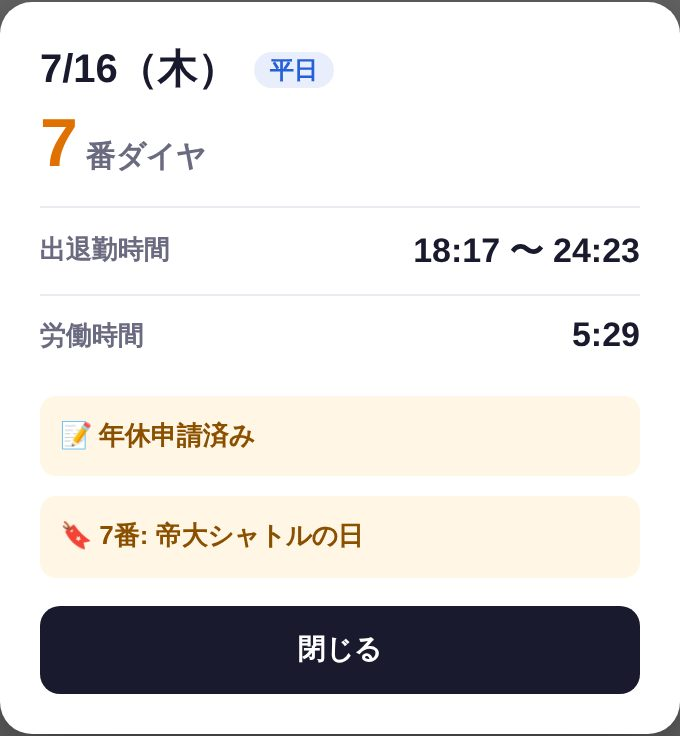
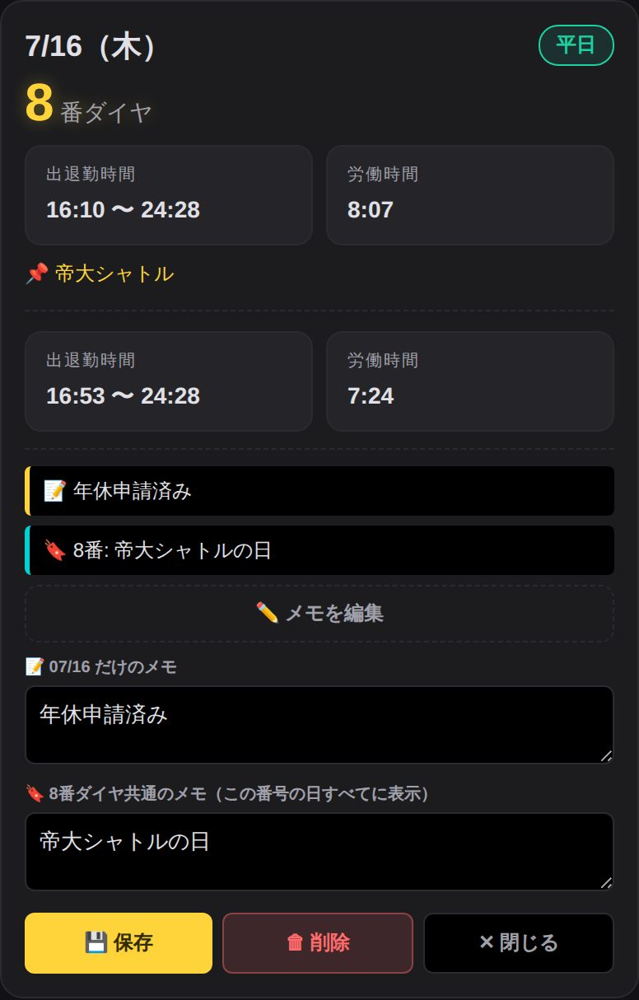
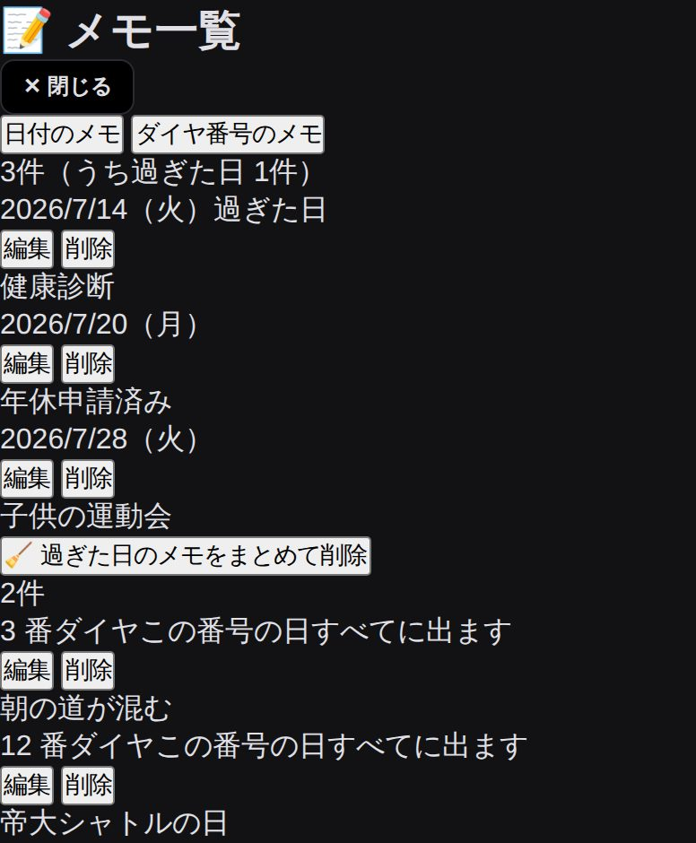

生駒ダイヤ ／ 2026年3月14日改正 ／ 1〜59番
一番上の枠に、今日の自分のダイヤ番号(1〜59)を入れるだけ。すぐ下に今日の勤務が出ます。

押すだけで、その分がまとめて出ます。次の日以降は、番号が1日ずつ進んだ状態で出ます。

日ごとに ダイヤ番号・出退勤の時間・労働時間 が並びます。休みの日は「公休」と出ます。

「📅 指定して検索」を押すとカレンダーが開きます。1回目のタップ＝開始日、2回目のタップ＝終了日。その間をまとめて調べられます。期間の長さに制限はありませんので、何ヶ月先でも指定できます。

結果の一番下の「📅 カレンダーで見る」を押すと、1ヶ月分が一目で分かります。マスをタップすると大きく表示されます。メモを保存した日には「●メモ」の印が付き、タップすると内容も見られます。


各日の「📝 メモを追加」から書けます。2種類あります。

下の「📝 保存したメモの一覧」を押すと、これまでのメモを全部まとめて見られます。その場で編集・削除もできます。

一度オンラインで開いておけば、その後は圏外や機内モードでも起動できます。
ホーム画面に入れておくと、アイコンを押すだけで一発で開けます。
毎回LINEをさかのぼって探す必要も、URLを打ち直す必要もありません。圏外でも開けます。